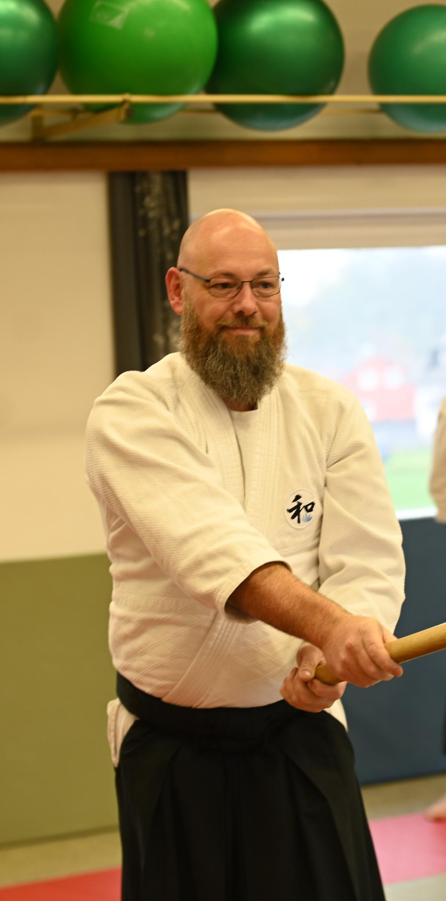

Christian Dostal
3. Dan Wanomichi Takemusu Aiki
Christian begann seine Aikido-Laufbahn 2004 in Steyr. In Hochburg-Ach begleitet er das Training mit ruhiger, genauer Arbeit an Grundlagen, Haltung und Verbindung.
Der Verein wurde am 10. Februar 2026 gegruendet und steht fuer traditionelles Aikido mit ruhiger, praeziser Trainingskultur.
Unsere Ausrichtung ist durch die Arbeit, den Austausch und die Inspiration von Edmund Kern sowie Daniel Toutain gepraegt. Im Mittelpunkt stehen saubere Grundlagen, Verbindung, Haltung und ein freundliches Miteinander auf und neben der Matte.
Athaler Strasse 1
5122 Duttendorf
Der Trainingsort liegt in Duttendorf in der Gemeinde Hochburg-Ach. Ueber Google Maps kannst du die Route direkt oeffnen.
Ein Probetraining ist nach kurzer Anmeldung jederzeit moeglich.
Bitte nimm vorher Kontakt mit uns auf, damit wir dich gut empfangen koennen. Fuer das erste Training reichen lange Sportbekleidung oder ein Trainingsanzug sowie Hausschuhe. Trainiert wird barfuss oder in rutschfesten Socken.

3. Dan Wanomichi Takemusu Aiki
Christian begann seine Aikido-Laufbahn 2004 in Steyr. In Hochburg-Ach begleitet er das Training mit ruhiger, genauer Arbeit an Grundlagen, Haltung und Verbindung.
Wir trainieren aufmerksam, respektvoll und ohne Leistungsdruck. Vor dem Betreten der Matte gruessen wir kurz an, Schmuck wird abgelegt und Fragen sind jederzeit willkommen.